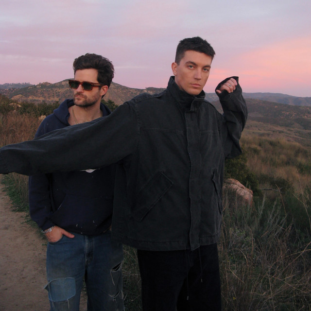

ABOUT
LANY is a pop rock band from Los Angeles, United States.
Formed in Nashville in 2014, the band consists of Paul Jason Klein and Jake Clifford Goss.
Genre: Alternative/Indie , Pop
Label: Polydor
Formed in Nashville in 2014, the band consists of Paul Jason Klein and Jake Clifford Goss.
Genre: Alternative/Indie , Pop
Label: Polydor